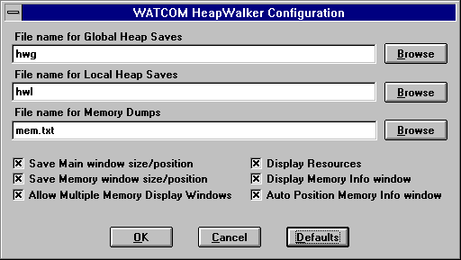
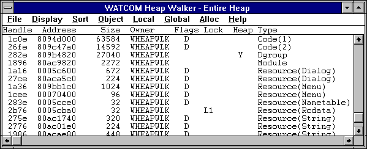
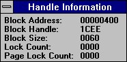
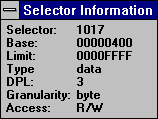
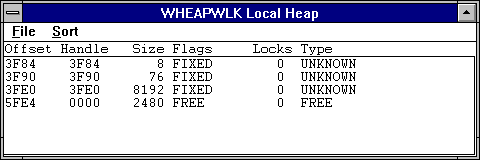
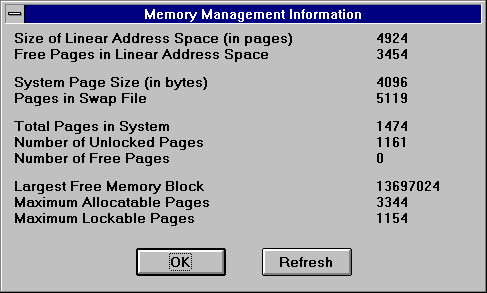
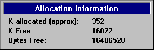

Index of Topics
- - A -
- Allocate All Memory
Allow Multiple Memory Display Windows
Auto Position Memory Info Window
- C -
- Calculating Memory Size
Changing the Heap Walker Display
Compact and Local Walk
Compacting the Global Heap
Configuring the Heap Walker Session
- D -
- Discarding an Object
Display Heap Information
Display Memory Info Window
Display Resources
- E -
- The Entire Heap
- F -
- Finding a Selector
Free All Memory
Free Items List
- G -
- GDI Local Walk
- H -
- Heap Walker
The Heap Walker Menu Bar
Heap Walker: Configuring the File Name Paths
Heap Walker: Configuring Window Behaviour
Heap Walker: Saving the Current Configuration
Heap Walker: Setting the Font
- I -
- Information Dialog Boxes
- L -
- Local Walk
LRU Items List
- M -
- The Memory Display Window
Monitoring Data Segment Usage
- O -
- Other Allocation Functions
- Q -
- Quitting Heap Walker
- R -
- Refresh the Heap
Refreshing the Global Heap
Removing Discardable Objects
Repositioning an Object
- S -
- Save Main Window Size/Position
Save Memory Window Size/Position
Saving Heap Walker Information to a File
The Selector List
Setting the Offset in the Memory Display Window
Sorting the Lists
Sorting the Local Heap
Starting Heap Walker
- T -
- Testing with Heap Walker
- U -
- USER Local Walk
Using Heap Walker
- V -
- Viewing an Object's Memory
Viewing Memory Management Information
Viewing the Contents of Memory
Viewing the Global Heap Summary
- W -
- Walking the Global Heap
Walking the Local Heap
Working with Individual Objects
Working with the Global Heap
Heap Walker
The Open Watcom Heap Walker is a testing and debugging tool for Windows. It allows you to do two things:
- observe how memory is being used
- view the contents of memory
- Note:
- Under Windows NT, the Heap Walker monitors only the memory used by 16-bit Windows applications.
Heap Walker enables you to locate corrupted data and allows you to manipulate stored memory for testing purposes.
In addition to these functions, this tool allows you to optimize your memory usage.
Heap Walker displays the stored memory, or objects, in the Heap Walker window. Objects are blocks of memory
that go together to make up the global heap. The objects may contain information such as program instructions, data,
or program resources. You control Heap Walker using the items from the menu bar.
Using Heap Walker
This section discusses the following topics:
- Starting Heap Walker
- Quitting Heap Walker
- The Heap Walker Menu Bar
Starting Heap Walker
To start Heap Walker, double click on the Heap Walker icon. This opens the Heap Walker window. The information
list displayed is the last list that was viewed during the previous Heap Walker session.

Figure 1. The Heap Walker window displays lists of memory objects
Quitting Heap Walker
To close the Heap Walker session, choose Exit from the File menu of the Heap Walker window.
The menu bar consists of the following eight menus:
- File
- Save to a file and configure the session
Display
- Select the type of information you want to appear on the Heap Walker window
Sort
- Select how you want to sort the information in the Heap Walker window
Object
- Work with the items in the Heap Walker window by viewing, removing, and reordering them
Local
- Work with Local Heaps
Global
- Work with the Global Heap
Alloc
- Allocate blocks of memory for testing purposes
Help
- Access on-line help information
Configuring the Heap Walker Session
There are many aspects of Heap Walker that you can configure, including setting the fonts, window positions, and save
paths. Choose the Configure item from the File menu. This opens the Heap Walker Configuration dialog box where
you customize the Heap Walker's behavior.

Figure 2. On the Heap Walker Configuration dialog, you customize the Heap Walker's behavior
The Configuration dialog is set up with defaults for all options. To reset all options to their defaults, click
the Defaults button.
Heap Walker: Configuring the File Name Paths
The Heap Walker window, the local heap window and the memory display windows all have file menus with save items.
When you choose the save item one in these windows the currently displayed information is saved to a filename generated by
heapwalker.
These file names are generated based on the entries in the File name for... fields of the Configuration Dialog.
The File name for Global Saves affects filename generation for saves from the Heap Walker window. The File name
for Local Saves affects filename generation for saves from the local walk window. The File name for Memory Dumps affects
filename generation for saves from the memory display window.
The file names for saves are generated from the entered file name as follows. If a path is specified for the
filename then the generated file will appear in the specified directory. The filename for the generated file is formed
by adding three digits to the end of the specified file name to form a new filename that is unique in the given directory.
For example, if the File name for Memory Dumps field contains "c:\mem\foo.txt" then all files saved from
the memory display window appear in the directory c:\mem and have filenames such as "foo000.txt", "foo001.txt"
and "foo003.txt".
Beside each file name field in the configuration dialog is a Browse button. Pressing this button opens a file
selection dialog where you can view your directory structure while picking the filename for that field.
Heap Walker: Configuring Window Behaviour
As well as file name options, the Configuration dialog contains six configuration options that you activate and de-activate
using check boxes. A description of each option follows.
Save Main Window Size/Position
Activating this option causes the size and position of the Heap Walker window to be saved when you close the application.
The next time you open the Heap Walker application, the window appears with the same size and same position as when
you last closed it.
Save Memory Window Size/Position
Activating this option causes the size and position of the Memory Display window to be saved when you close the application.
The next time you open the Memory Display window, it appears with the same size and same position as when you last
closed it.
Allow Multiple Memory Display Windows
When this option is activated, you can open multiple Memory Display windows. The new window may open on top of an
existing window, but can be moved and resized as necessary.
When this option is not activated, selecting a second object to view from the Heap Walker window closes the first
Memory Display window and opens the new Memory Display window in its place.
Display Memory Info Window
When this option is selected a Handle Information or Selector Information dialog box appears whenever a Memory Display
window is opened. If this option is not activated the information box does not appear, but it can be opened by choosing
Show Info from the File menu in the Memory Display window.
Auto Position Memory Info Window
The setting of the Auto Position Memory Info option in the Configuration dialog determines the default setting of the
Auto Position Info feature in the Memory Display window.
In the Memory Display window, activating the Auto Position Info feature ensures that the information box is always
attached to the window. When deactivated, the Handle Information or Selector Information dialog box moves separately
from the Memory Display window. You can turn on the auto position feature by selecting Auto Position Info from the
File menu on the Memory Display window.
Display Resources
When the Display Resources option is activated, Heap Walker displays a graphical image when you open the memory display
window for an object that represents a graphical resource.
Heap Walker: Saving the Current Configuration
Normally, Heap Walker saves the configuration information, such as the window size and position, only when the application
closes. Choosing the Save Current Configuration item from the File menu of the Heap Walker window causes Heap Walker
to save the current configuration information. This saves the main window and Memory Display window sizes and positions,
even if the Save Main window size/position and the Save Memory window size/position options in the Configuration dialog box
are not selected.
Heap Walker: Setting the Font
The Font item in the File menu allows you to set the font, style, and size for the text in all Heap Walker windows.
This item opens the Font dialog box. Select the desired font details and click on OK to close the dialog and apply
the fonts.
Walking the Global Heap
There are four lists of information you can display in the Heap Walker window. The Display menu allows you to choose
a list to be displayed. The lists Heap Walker can display are:
- Entire Heap
- All of the memory objects on the global heap
Free Items
- All of the objects that are not currently allocated
LRU Items
- The least recently used list items
Selector List
- All valid selectors
The Entire Heap
Choosing Entire Heap from the Display menu displays a list of all the global heap in the Heap Walker window. The
global heap is a pool of memory set aside by the system from which all program memory is allocated.

Figure 3. Choosing the Entire Heap item displays the global heap.
The following are the column headings that appear when the selected display is Entire Heap, Free Items, or LRU Items.
- Handle
- An identifier assigned by the operating system to each object on the global heap
Address
- The physical address in memory of the first byte in the object
Size
- The total number of bytes occupied by the object
Owner
- The module that owns the memory
Flags
- An indicator specifying the type of the object. The codes are F (fixed memory) and D (discardable memory). A blank
indicates that Heap Walker is unable to determine if the object is fixed or discardable.
Lock
- An identifier indicating if there is a lock on the object. L1 indicates there is a lock on the memory; P1 indicates
there is a page lock on the object; a blank indicates there is no lock on the object.
Heap
- An indicator specifying if the object has a local heap. The code Y indicates that the object has a local heap; a blank
field indicates there is no local heap.
Type
- An indicator specifying the type of information in the object
Free Items List
The Free Items list contains all objects on the global heap that are currently unallocated. Viewing the Free Items
list allows you to see how fragmented your free memory is. The Free Items list appears under the same column headings
as The Entire Heap list.
LRU Items List
The LRU Items list contains all items in the system that are currently available to be discarded. The system discards
memory when there is not enough free memory to satisfy an allocation request from a program. Memory is discarded based
on a least recently used algorithm.
Only the LRU list can be sorted by age. When sorted this way the objects appear in order from newest to oldest.
This means the first object on the list will be the last item to be discarded. This allows you to see the order
in which the system will discard objects.
To sort the LRU list, refer to the section Sorting the Lists.
The LRU Items list appears under the same column headings as The Entire Heap list.
The Selector List
The selector list displays all valid ring three selectors in the system. This list also shows descriptor table information
about each selector.

Figure 4. The Selector List displays all valid ring three selectors.
You can view the data accessible by a selector by double clicking on its entry in the list. When you do this
a Memory Display window appears. Attached to this window is a Selector Information dialog box that contains the information
about the chosen selector that was displayed in the selector list.
The following are the column headings that appear when the Selector List is displayed.
- Sel
- The selector that information on this line refers to
Base
- The lowest linear address accessible using this selector
Limit
- The number of bytes of memory that this selector allows you to access. The greatest linear address accessible using
this selector is Base plus the Limit. (i.e. <sel>:<limit>)
Gran
- The granularity of the selector
Type
- A value indicating if this selector provides execute access. This value contains the value code if execute access
is provided. Otherwise the field contains data.
DPL
- The privilege level for this selector. This determines the privilege level that a task requires to access this memory.
Access
- The operations that are allowed on memory using this selector. The codes in this field are R (read), W (write), and
Ex (execute).
Big
- A code indicating if the selector's B flag (bit 54) is set. A Y in this column indicates the flag is set.
A blank indicates the flag is not set.
Sorting the Lists
The items that appear in the Sort menu depend on the list selected from the Display menu. The Sort items allows
you to organize the displayed information, making objects easier to find. There are two ways to sort information in
Heap Walker.
- Choose the desired sort method from the Sort menu
or
- Click once on the column heading by which you want to sort.
Only those headings appearing in the Sort menu change the organization of the displayed information when selected.
The following is a list of the headings by which you can sort the displayed information. Some headings have
a secondary sort feature. For example, when you sort by Type, Heap Walker first sorts the Type field alphabetically,
then organizes objects of the same Type by Owner. Where applicable, the secondary sort appears in parentheses.
For the Entire Heap, Free Items, and LRU Items lists:
- Address
- Handle
- Owner (secondary sort=Type)
- Size
- Type (secondary sort=Owner)
- Flag
- Age (available for LRU Items list only)
For the Selector List
- Base Address
- Selector
- Limit
- Granularity
- Type
- DPL
Viewing the Contents of Memory
You can view the data stored in an object that appears in one of the lists displayed in the Heap Walker window by double
clicking on the desired object. This opens a Memory Display window for the object.
The Memory Display Window

Figure 5. The Memory Display window displays the data stored in the selected object.
The Memory Display window displays all of the data stored in the selected object. The data in this window appears
in hexadecimal form. The Memory Window is useful because it allows you to see if the data in memory is what you believe
it should be. Heap Walker cannot display the Memory Display window for free items or objects whose size equals zero.
When you size the Memory Display window Heap Walker automatically reformats the information so that it is the same
width as the window.
Some memory objects contain information representing graphical objects used by Windows, such as menus, dialogs, cursors,
and icons. When you display the data for one of these objects in the Memory Display window, Heap Walker also displays
the object in graphical form. Occasionally, this operation may fail for different reasons, including lack of memory
and the inability to read certain resource formats.
If the object displayed is a menu then Heap Walker can tell you the constant associated with any item in the menu.
When the menu is displayed in graphical form simply select an item from it. Heap Walker will display a dialog
that shows the name of the item selected and the numeric constant associated with it. This numeric constant is the
number passed as the wparam parameter of a window's callback function when the menu item is selected.
The Memory Display window is accompanied by an Information dialog box. This section describes the Information
dialog, as well as the various functions you can perform within the Memory Display window. Functions include saving,
setting the display, and setting the offset.
The Save items in Heap Walker allow you to save the information displayed in a window to a text file. Saving information
to a file allows you to do many things, including:
- print the output later
- compare objects outside of Heap Walker
- annotate the text file on-line
Choosing Save from the File menu on the Memory Display window saves the data in the window to a file name generated by
Heap Walker based on the information in the Configuration dialog. A message box appears indicating the path to which
Heap Walker saved the file.
Choosing Save As from the File menu allows you to specify the file to which you want to save the data currently in
the window. This opens a Save As dialog box where you select the desired file. Click on OK when completed.
A message box appears indicating the path to which Heap Walker saved the file.
Changing the Heap Walker Display
There are five ways to display the information in the Memory Display window. You can display the information as:
- Bytes
- Words
- DWords
- 16-bit Code
- 32-bit Code
To change the form of the displayed data, select an item from the Display menu.
When displaying data in bytes, the data appears in the window as it physically appears in memory. When the data
is displayed as words, the bytes in memory are interpreted for you so that the values displayed are those that would be obtained
by treating the memory as an array of words. For example, if memory containing the values:
12 34 56 78 9A BC DE FF
was shown as words, the memory window would display:
3412 7856 BC9A FFDE
A similar interpretation is performed when the data is displayed as DWords. If the above memory was shown as
DWords, the memory window would display:
78563412 FFDEBC9A
This rearrangement of bytes does not affect the textual interpretation of the data shown on the right hand side of
the window.
Selecting 16 or 32 Bit Code from the Display menu presents the data in a disassembled form. Sometimes presenting
the data in disassembled form is not accurate. This is because when Heap Walker disassembles the data it begins at
the first byte of the memory block and disassembles it linearly. If a byte in this block, such as a padding byte, throws
off the sequence, the disassembly will be meaningless.
Setting the Offset in the Memory Display Window
In the Memory Display window, selecting the Set Offset item from the menu bar allows you to reposition the data so that
the specified line appears at the top of the window. The offset you enter appears on the first line. It will
not necessarily be the first piece of information because rounding often occurs to avoid breaking a line.
- (1)
- Choose Set Offset from the menu.
This opens a Goto Offset dialog box.

Figure 6. In the Goto Offset dialog, enter the offset you want to appear at the top of
the Memory Display window.
(2)
- Enter the desired offset that you want to position at the top of the Memory Display window. You can enter the
offset in decimal or hexadecimal form. However, you must prefix hexadecimal values with 0x (e.g. 0x00000005).
(3)
- Click on OK.
This closes the dialog and positions the data as requested.
A Handle Information dialog box attached to the Memory Display window provides the information that appears on the Heap
Walker window for the displayed object. The information in this dialog is:
- Block Address
- Block Handle
- Block Size
- Lock Count
- Page Lock Count

Figure 7. The Handle Information dialog box displays information for the selected object.
When the selected display is the Selector List, the Selector Information dialog box is attached to the Memory Display
window. The information in this dialog is:
- Selector
- Base
- Limit
- Type
- DPL
- Granularity
- Access

Figure 8. The Selector Information dialog displays the Selector List information for the
selected object.
The information boxes stay with the Memory Display window when the Auto Position Info item under the File menu is
checked. Uncheck this item by selecting it again from the File menu.
If the information dialog is not visible, reveal it by choosing Show Info from the File menu on the Memory Display
window. Close this dialog by double clicking on the system menu box in the upper left hand corner of the dialog.
Working with Individual Objects
The items in the Object menu enable you to operate on the individual objects on the global heap.
- The Object Menu
-
Show
- View the data stored in an object.
Get Selector
- Show the Selector corresponding to a Handle.
Discard
- Request that a discardable object be purged from memory.
Oldest
- Reposition an object to become the oldest object on the LRU list.
Newest
- Reposition an object to become the newest object on the LRU list.
Add
- Calculate and display the amount of memory used by selected objects.
These items allow you to quickly set up test situations while developing a program. For example, if you suspect
your program has a bug caused by the system discarding a particular object, you can use the Newest item to force the system
to keep that object. Similarly, you can discard an object that you suspect is causing a bug to see if your program
runs without it.
Some items apply only to specific objects. To reposition and discard objects, the selected object must be a
discardable item. When the Selector List is displayed only the Show item is available.
Viewing an Object's Memory
Viewing an object's memory is useful because it allows you to see if what is actually in memory is what you think should
be in memory. There are two ways to view an object's memory:
- Double click on the desired object
or
- Click once on the desired object to select it and choose Show from the Object menu.
This opens a Memory Display window for the selected object.
You can save the information on this window to a file and change the way in which the window displays the memory information.
Refer to the section Viewing the Contents of Memory for details on these
functions.
Finding a Selector
The Get Selector function locates the selector for any object with a handle. You need to know the selector to get
the logical address in memory of an object. This function is not available for free items or objects without handles.
To find the selector for an object:
- (1)
- Click once on the object whose selector you want to find.
(2)
- Choose Get Selector from the Object menu.
This opens a message box which indicates the Selector that corresponds to the selected memory object.
(3)
- Click on OK to close the message box.
Discarding an Object
The Discard item allows you to request that the system purge a discardable object from memory. Only objects marked
by the operating system as discardable can be discarded.
Choosing this item is equivalent to making the API call GlobalDiscard for the selected object.
To discard an object:
- (1)
- Click once on the object you want to discard.
(2)
- Choose Discard from the Object menu.
This opens a message box which indicates the Handle of the object discarded, as well as the number of bytes discarded.
(3)
- Click on OK to close the message box.
Repositioning an Object
Repositioning objects allows you to force discardable objects to be the oldest or newest object on the LRU list.
The system discards objects from memory when there is not enough free memory available to satisfy an allocation request from
a program. Giving an object the status Oldest ensures that if the system discards objects from memory, this will be
the first object discarded. Giving an object the status Newest ensures that when the system removes memory, this will
be the last object removed.
To reposition an object:
- (1)
- Click once on the object you want to reposition.
(2)
- Choose Oldest or Newest from the Object menu, depending on how you want to reposition the object in the list.
This opens a message box which indicates the handle of the object that has been repositioned in the selected manner.
(3)
- Click on OK to close the message box.
Calculating Memory Size
The Add function is a summary function you use to calculate the memory size of selected objects. This function may
be helpful in identifying memory leaks.
A memory leak occurs when a program allocates memory but does not free it when the memory is no longer needed.
If a program has a memory leak it requires increasingly more memory as it runs. With the Add function you can quickly
determine the amount of memory being used by your program at any point in time. This allows you to determine if its
memory requirements are increasing over time.
Choosing Add from the Objects menu opens an Add dialog box.

Figure 9. As you select objects, the Add function calculates and displays the number of
selected objects and their total size.
During an Add operation the global heap list acts as an extended selection list box. There are several ways
to select objects in an extended selection list box. The following describes three common selection techniques you
can use.
- Select one object by clicking on it. The Add dialog displays the size of the selected item.
- Select multiple objects by holding the CTRL key and clicking on each object one at a time. The Add dialog displays
the number of objects selected and the total size of those objects.
- Select many objects in a sequence by clicking on the first object and dragging the mouse while depressing the mouse button.
Release the mouse button when the last item in the sequence is highlighted. The Add dialog displays the number
of objects selected and the total size of those objects.
Walking the Local Heap
A local heap is a pool of memory set aside by an individual program from which only that program can make allocations.
Looking at the local heap allows you to see how your program is using the memory it is taking from the local heap.
All items in the Local menu relate to objects with local heaps, so are only functional with such objects. Objects
marked with a Y in the Heap column have a local heap.
Monitoring Data Segment Usage
Every Windows program has a default data segment. This block of memory contains the program's stack, local heap
and the memory for any static or extern variables that it declares (static data). If a program requires enough static
data that its default data segment grows beyond 64K then it must be recompiled for the large memory model and may encounter
problems when more than one instance of the program run simultaneously.
The Monitor Local Heap item allows you to see how memory in a program's default data segment is being used so you
can optimize this by reducing the amount of stack space allocated to the minimum required or eliminate memory leaks that
could drive up the amount of memory required by the local heap.
When you choose the Monitor Local Heap item a Local Heap Monitor window is opened. This window contains a scale
ranging from zero to the number of bytes in the selected data segment. The scale is divided into colored blocks which
illustrate how the memory for the object is used. Uses include:
- Fixed heap
- memory occupied by fixed objects on the program's local heap
Free heap
- memory occupied by free objects on the program's local heap
Moveable heap
- memory occupied by movable objects on the program's local heap
Stack allocated
- memory allocated for use by the program's stack
Stack used
- memory actually used by the program's stack since the program began execution
Static data
- memory used by the program's static data
Unknown
- memory for which Heap Walker cannot determine a use
Heap Walker updates this display continuously as memory usage changes.
To view the usage of a program's default data segment:
- (1)
- Click once on the object containing the default data segment you want to monitor.
This object will contain a local heap. A program's "hInstance" is the handle of its default data segment.
(2)
- Choose Monitor Local Heap from the Local menu.
The Local Heap monitor window opens which displays the usage scale for the selected object.

Figure 10. The Local Heap Monitor window displays a scale indicating how the selected object
is used.
(3)
- Double click on the system menu to close the window.
Local Walk
Selecting the Local Walk item from the Local menu opens the Local Heap window for the selected object.

Figure 11. The Local Heap window displays the local heap for the selected object.
This window displays all objects on the selected object's local heap. Unlike the global heap, you cannot double
click on the local heap objects to view the data they contain.
The local heap window displays the following information:
- Offset
- The number of bytes from the beginning of the object containing the local heap to the beginning of the object on the local
heap
Handle
- An identifier assigned by the operating system to each object on the local heap
Size
- The total number of bytes occupied by the object
Flags
- An indicator specifying the type of the object. The types are Free (unallocated object), Fixed (allocated object that
has a fixed position on the local heap), and Moveable (allocated object that the operating system is able to reposition on
the local heap).
Locks
- The lock count for the object
Type
- An indicator specifying the type of information in the object
There are two menus in this window: File and Sort. The File menu allows you to perform standard functions,
including:
- saving to a file (Save, Save As)
- closing the window (Exit)
Following are other functions you can perform in the Local Heap window.
Refresh the Heap
The state of the local heap constantly changes as applications run. Selecting the Refresh Local List item in the
File menu updates the information in the Local Heap window.
Selecting the Heap Info item in the File menu of the Local Heap window opens the Local Heap Information dialog box.

Figure 12. The Local Heap Information dialog displays summary information for the current
local heap.
This dialog displays the count and size, in bytes, of the free, moveable, and fixed objects in the local heap for
the selected object.
Because the state of the local heap constantly changes, you can select the Refresh button on the dialog to update
the local heap information. Click on OK to close the dialog.
Sorting the Local Heap
The Sort menu allows you to select the way Heap Walker displays the local heap information, making objects easier to find.
There are two ways to sort information in the local heap window:
- Choose the desired sort method from the Sort menu
or
- Click once on the column heading by which you want to sort.
Only those headings appearing in the Sort menu change the organization of the displayed information when selected.
Compact and Local Walk
Selecting the Compact and Local Walk item compacts the local heap for the selected object. Once compacted, this
function opens the Local Heap window. The functions available on this window are the same as for the Local Walk function.
This function is equivalent to making the API call LocalCompact(-1) and then selecting Local Walk from the Local menu.
GDI Local Walk
GDI is the part of the Windows operating system responsible for drawing on the screen. Much of what a Windows program
does involves drawing on the screen using objects such as device contexts, pens, and bitmaps. GDI is responsible for
managing these objects. Memory for them is contained on the GDI Local Heap. Walking the GDI local Heap allows
you to view the GDI objects that currently exist in the system.
GDI objects are a limited resource in the system, so it is important that Windows applications use them wisely.
Walking the GDI Local Heap allows you to monitor GDI object usage.
To walk the GDI Local Heap choose GDI Local Walk from the Local menu.
USER Local Walk
USER is the part of the Windows operating system responsible for managing user interface objects such as windows, menus,
and dialogs. Some memory associated with these objects is contained on the USER Local Heap.
Space on the USER Local Heap is a limited resource in the system, so it is important that Windows applications use
it wisely. Walking the USER Local Heap allows you to monitor usage of this space.
To walk the USER Local Heap choose USER Local Walk from the Local menu.
Working with the Global Heap
The global heap is a pool of memory set aside by the system from which all program memory is allocated. There are
five functions you can use to monitor and manipulate the Global Heap. This section describes these functions.
Refreshing the Global Heap
As programs run, the state of the global heap changes. When you select the global heap window after a window belonging
to another application has been active, Heap Walker automatically refreshes the displayed global heap information.
Selecting the Refresh Global Heap item in the Global menu forces Heap Walker to update the displayed global heap information.
Compacting the Global Heap
Compacting the global heap creates larger blocks of free memory. The system automatically compacts the global heap
when it needs memory.
The Global Compact item in the Global menu allows you to manually force the system to compact the global heap.
Selecting this item is equivalent to making the API call GlobalCompact(0).
Removing Discardable Objects
Selecting the Global Compact and Discard item from the Global menu removes all discardable objects and compacts the free
memory on the global heap. This allows you to create larger blocks of free memory. Selecting this item is equivalent
to making the API call GlobalCompact(-1).
Viewing the Global Heap Summary
Selecting the Global Heap Info item from the Global Menu opens a Global Heap Information dialog box. This dialog
summarizes global heap usage.

Figure 13. The Global Heap Information dialog provides a summary of global heap usage.
Information included on this dialog is:
- Total Items on the Heap
- Number of Free Items
- Number of LRU Items
The state of the global heap changes as applications run. Select the Refresh button to update the global heap summary.
Click on OK to close the dialog.
Selecting the Memory Management Info item from the Global menu opens a Memory Management Information dialog box.
This dialog displays information regarding the state of the virtual memory manager.

Figure 14. The Memory Management Information dialog displays information regarding the
state of the virtual memory manager.
Following is the information that appears on this dialog.
- Size of Linear Address Space (in pages)
- The size of the total linear address space in pages
Free Pages in Linear Address Space
- The amount of free memory, in pages, in the linear address space
System Page Size (in bytes)
- The size, in bytes, of a page of memory
Pages in Swap File
- The number of pages in the system swap file
Total Pages in System
- The total number of pages managed by the virtual memory manager, including free, locked, and unlocked pages
Number of Unlocked Pages
- The number of unlocked pages in the system, including free pages
Number of Free Pages
- The number of pages in the system that are not currently in use
Largest Free Memory Block
- The size, in bytes, of the largest free block of contiguous linear memory in the system
Maximum Allocatable Pages
- The maximum number of pages that are available in the system for allocation
Maximum Lockable Pages
- The maximum number of pages that are available in the system to be allocated and locked
The information displayed by this dialog changes as applications run. Click on the Refresh button to update the
displayed information. Click on OK to close the Memory Management Information dialog.
Testing with Heap Walker
Heap Walker provides various allocation functions that allow you to test your programs. By allocating and freeing
memory you can see how your program reacts in low memory situations.
Each time you select the Alloc menu an Allocation Information dialog box appears on the screen.

Figure 15. The Allocation Information dialog provides approximate size information regarding
allocated and free memory.
The information in this dialog includes Kilobytes allocated (approximately), Kilobytes free, and Bytes free.
It is important to realize that the information appearing in this dialog is approximate. This information appear so
you can monitor the approximate amounts of memory you have allocated using an Allocation function. You should use this
information only when using an Allocation function.
- Important:
- Do not use the Allocation functions under the Windows Debug Kernel as they can make your system unstable.
Allocate All Memory
To see how your program runs when all free memory is allocated, choose Allocate All Memory from the Alloc menu.
Choosing this item may change the appearance and performance of your application. This is normal because when there
is little memory available, the system may discard fonts that Heap Walker is using and swap information to disk more frequently.
Free All Memory
Selecting the Free All Memory item frees all of the allocated memory. This returns to the system the memory taken
away using other Allocation functions.
Other Allocation Functions
The final three allocation functions-Allocate all but, Allocate, and Free-allow you to choose an amount of memory to allocate
or free. Perform these functions as follows:
- (1)
- Choose the desired function from the Alloc menu.
(2)
- Choose the desired amount of memory that you want to allocate, free, or leave unallocated.
For all functions, an n amount is available. Selecting this item closes the Allocation Information dialog box and
opens a separate dialog box displaying the following information:
- K Allocated (approx.)
- K free (approx.)
- Bytes Free

Figure 16. On the allocation dialog box, enter the desired amount of memory to allocate,
free, or leave unallocated.
(3)
- In this dialog, enter the specific number of bytes to Allocate all but, Allocate, or Free.
The system interprets the entered value as bytes, unless you follow the value with a K, in which case the value is read
as kilobytes. You can enter Hexadecimal values by prefixing them with 0x.
(4)
- Click on OK to process the request and close the dialog.